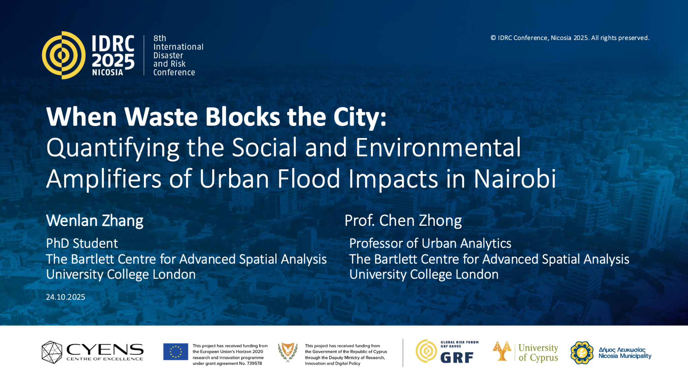
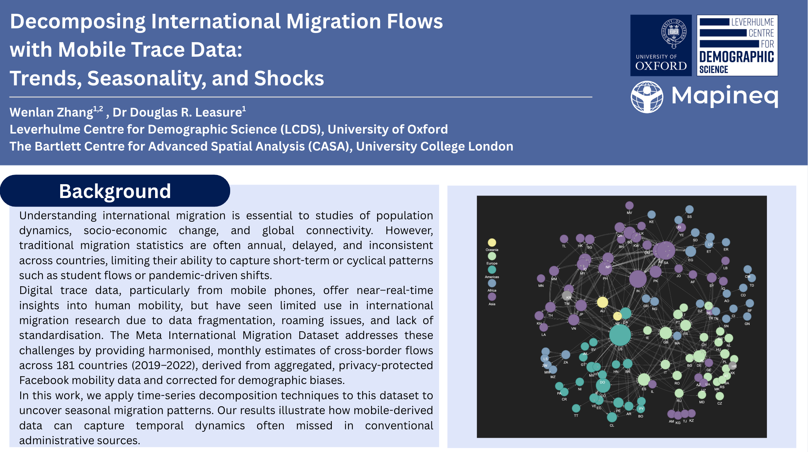
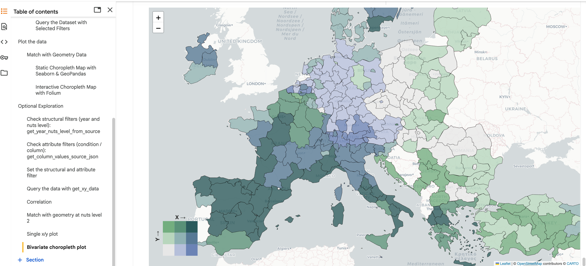
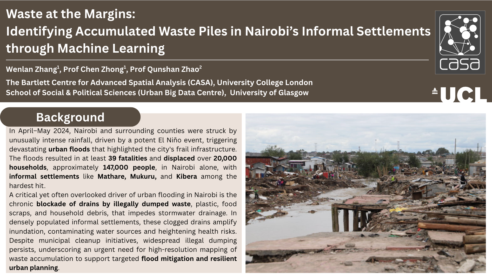
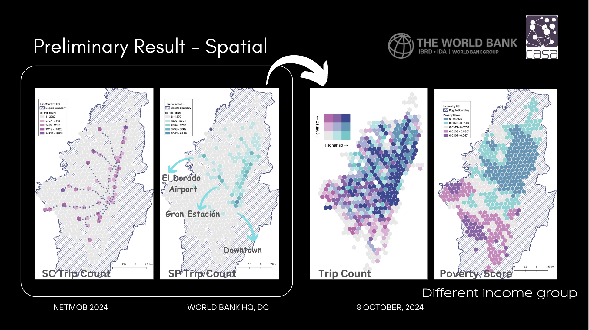
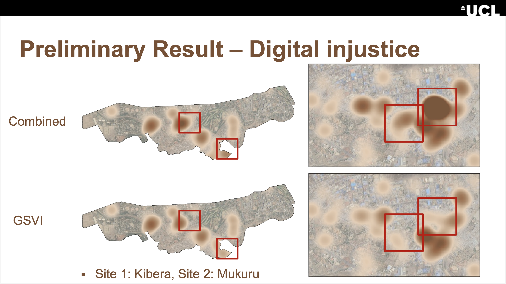
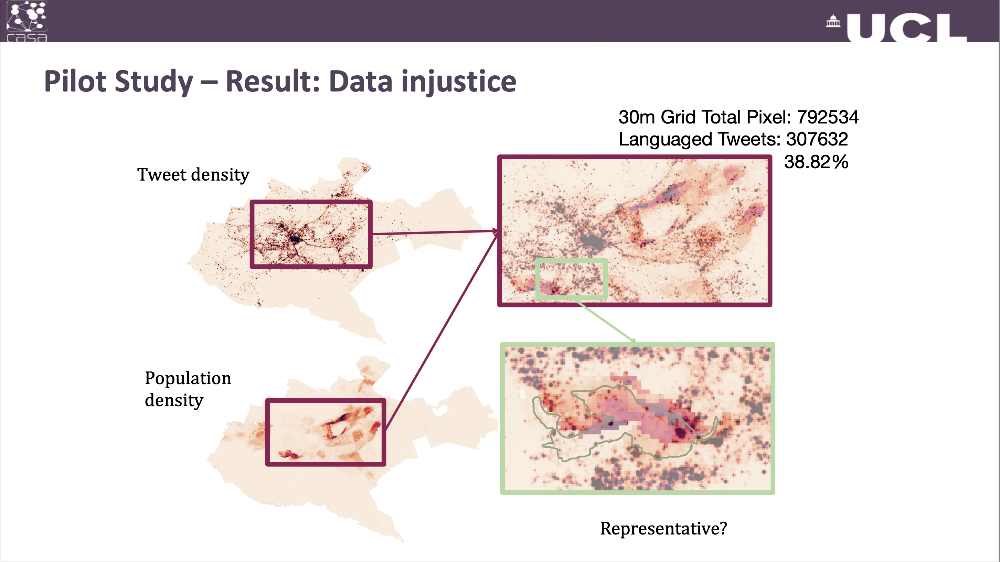

Presentation

Date: October 22-24, 2025
Location: CYENS Centre of Excellence, Nicosia, Cyprus
Title: Is Waste Blocking Our Cities? A Multisource Approach to Understanding Flood Disruption in Nairobi
Authors: Wenlan Zhang, Prof. Chen Zhong
Acknowledgement: This presentation was supported by IDRC 2025 Scholarship and realTRIPS project (ERC).
View Presentation

Date: October 8-10, 2025
Location: Paris, France
Main Conference Research Title: Decomposing International Migration Flows with Mobile Trace Data: Trends, Seasonality, and Shocks
Main Conference Research Authors: Wenlan Zhang, Dr Douglas R. Leasure
Data Challenge Title: Integrating Temporal Context into User Profiling: A Preliminary Study with Doc2Vec
Data Challenge Authors: Wenlan Zhang, Adam(ZhengZi) Zhou, Andrew Renninger
Acknowledgement: This presentation was supported by Netmob 2025 student travel grant and Leverhulme Centre for Demographic Science (LCDS), University in Oxford.
View Poster | View Abstract

Date: September 29-30, 2025
Location: Oxford, UK
Title: Mapineq Workshop
Workshop Team: Dr. Douglas Leasure, Wenlan Zhang, Xiang Ao
View Tutorial | Summary

Date: July 21-24, 2025
Location: Norrköping, Sweden
Title: AI for Spatial Justice: Multimodal and Street View Imagery Uncover Waste Disparities in Nairobi's Informal Settlements
Authors: Wenlan Zhang, Prof. Chen Zhong, Prof. Qunshan Zhao
Acknowledgement: This presentation was supported by UCL CASA student travel grant.
View Poster | Abstract

Date: October 7-9, 2024
Location: Washington DC, US
Title: Unveiling Urban Travel Patterns: A Comparative Analysis of Smart Card and Mobile App Data
Authors: Dr. Sveta Milusheva, Wenlan Zhang
View Presentation | Abstract

Date: April 16-20, 2024
Location: Honolulu, Hawai'i, US
Title: A Data-Driven Approach for Identifying Open Dumping Sites in the Global South
Authors: Wenlan Zhang, Dr. Angela Abascal, Dr. Chen Zhong, Dr. Qunshan Zhao
Acknowledgement: This presentation was supported by realTRIPS project (ERC).
View Presentation | Abstract

Date: September 12-15, 2023
Location: Leeds, UK
Title: Digital Injustice: A Case Study of Land Use Classification using Multi-source Data in Nairobi, Kenya
Authors: Wenlan Zhang, Dr. Chen Zhong, Dr. Faith Taylor
Acknowledgement: This presentation was supported by realTRIPS project (ERC).
View Presentation | Read Short Paper